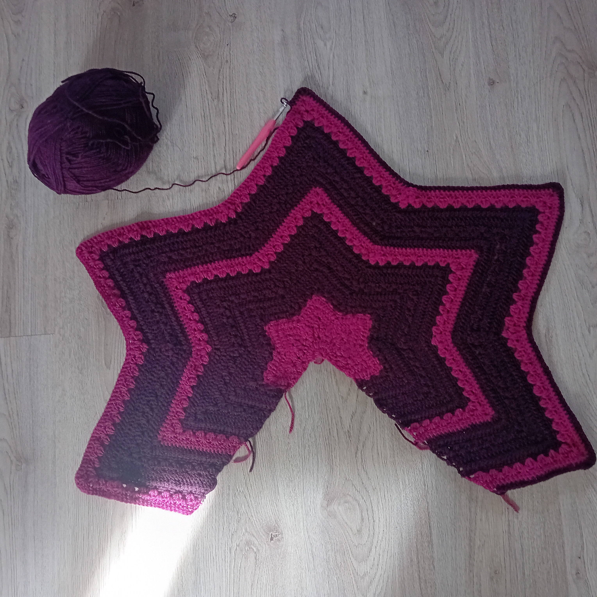

Hi, I'm Soo Jin. I'm half Korean and half Dutch. I grew up in South Korea and moved to the Netherlands when I was 12. I usually spend my summer vacation in South Korea, but this year I plan to go in May. At my high school we didn't do very complicated things, and I've forgotten a lot, so I'm quite inexperienced in coding.
I have many hobbies that I enjoy in my free time. Two of my main interests are knitting and crocheting. Although I still have a lot of stitches to learn, I like challenging myself with new projects. At the moment, I am working on a shawl that takes quite a long time to finish, but I enjoy seeing the progress. In the past, I knitted a blanket, and I am now planning to make a sweater as my next project. Besides working with yarn, I also enjoy painting with watercolors. My paintings are usually more abstract, with blobs of color and interesting effects created by blending the paint with water. Another hobby of mine is watching Disney movies. One of my favorites was Descendants, and when I was younger I especially enjoyed Sofia the First.